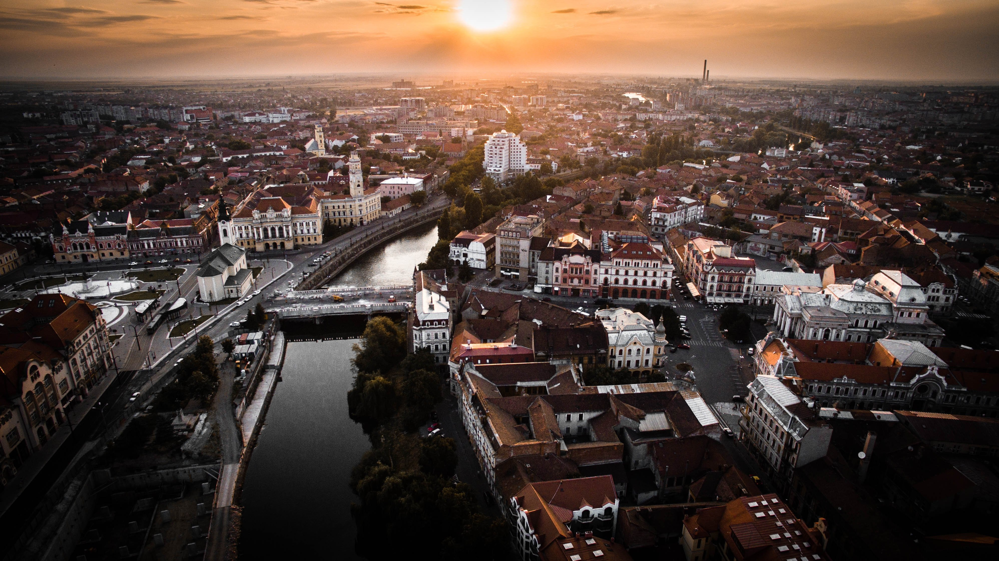
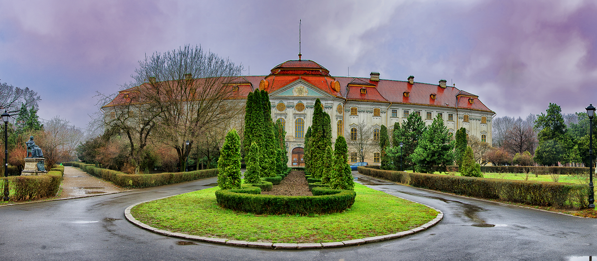
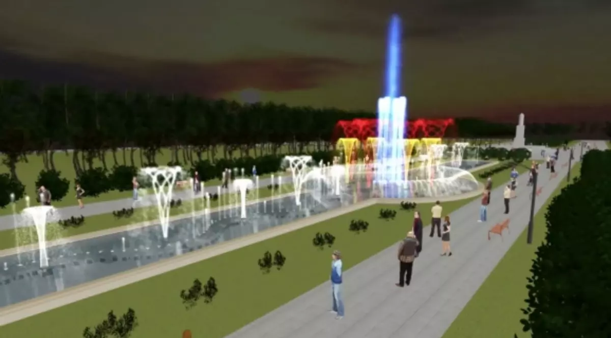
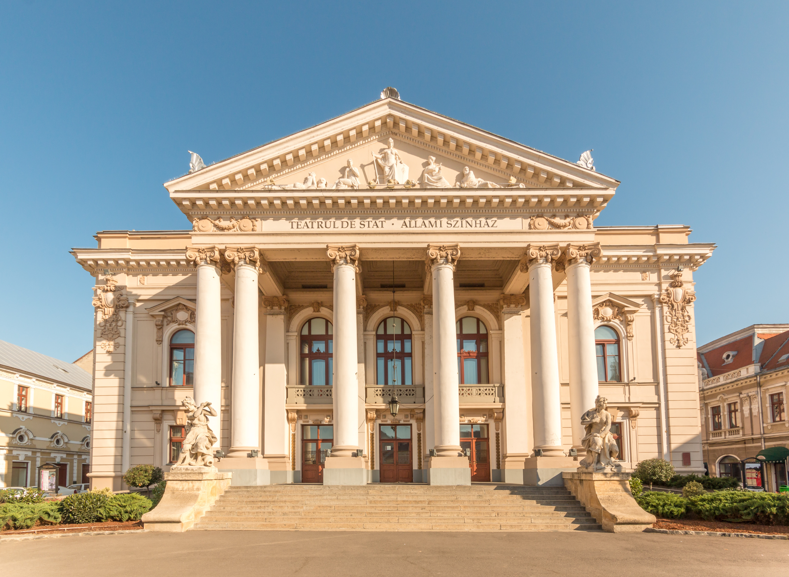
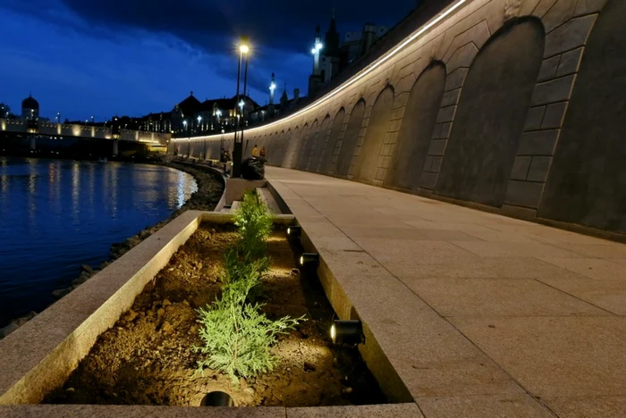
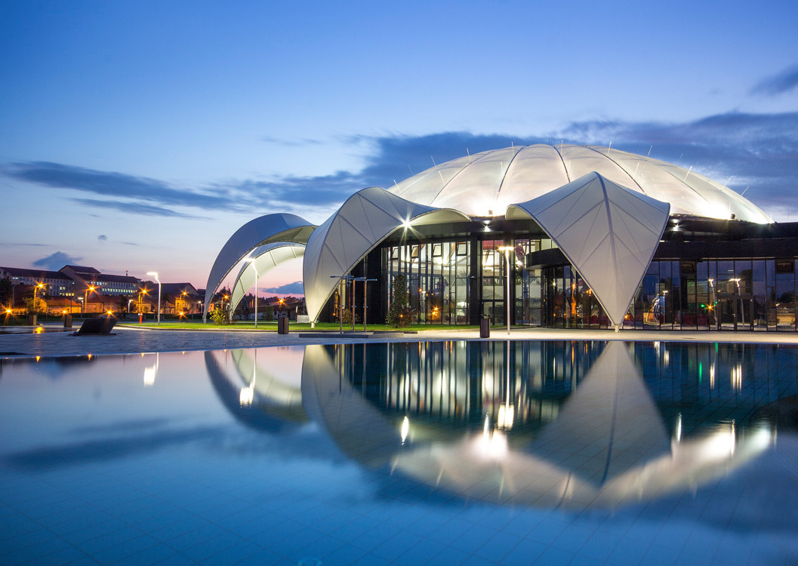
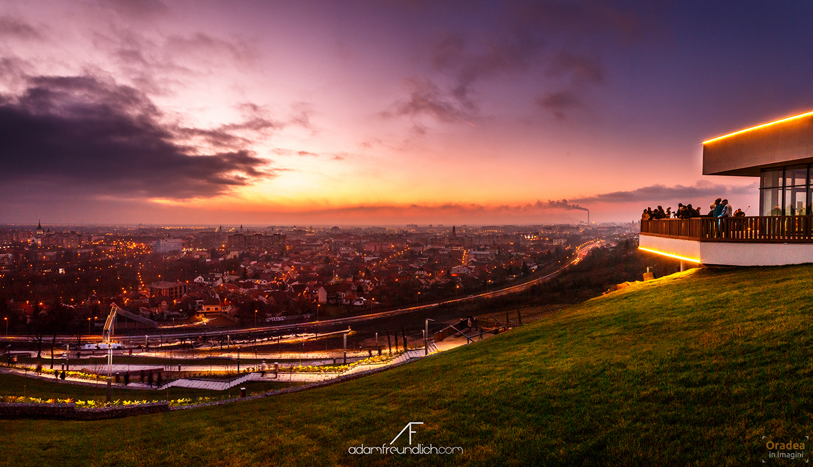
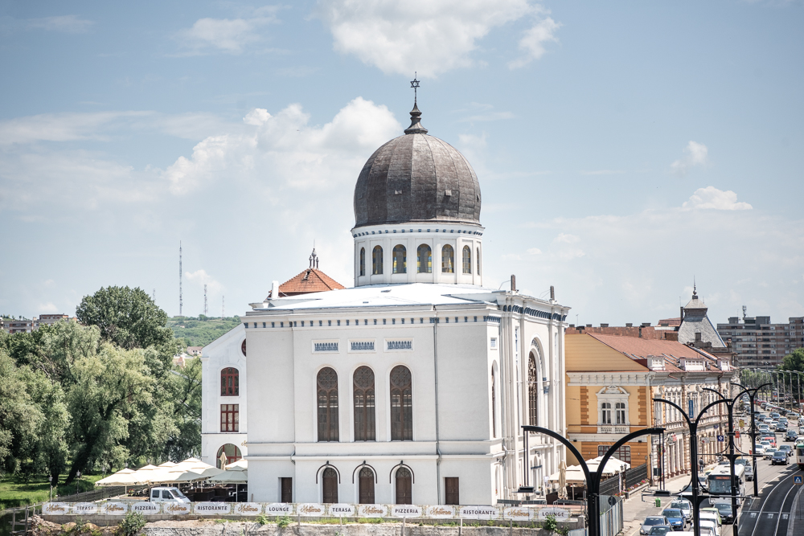

Istorie

Oradea este unul dintre cele mai frumoase orașe din
vestul României,
renumit pentru arhitectura sa Art Nouveau și pentru
istoria sa bogată.
Orașul a fost un important centru cultural și comercial
în Europa Centrală,
fiind influențat de mai multe culturi de-a lungul
secolelor, inclusiv
română, maghiară și austriacă.
În prezent, orașul este apreciat pentru clădirile sale
istorice
restaurate, piețele elegante și atmosfera sa relaxantă.
Printre
cele mai cunoscute obiective turistice se numără Cetatea
Oradea,
Palatul Baroc, Biserica cu Lună și Aquapark Nymphaea.
Atracții turistice
-
Cetatea Oradea

-
Palatul Baroc

-
Parcul 1 Decembrie

-
Teatrul Regina Maria

-
Faleza Crișului Repede

-
Aquapark Nymphaea

-
Palatul Vulturul Negru

-
Dealul Ciuperca

-
Sinagoga Sion

Pentru mai multe detalii:
Apasă aiciCultură și evenimente
Oradea este un oraș cu o viață culturală activă și diversă, care îmbină tradițiile istorice cu evenimente moderne. Datorită patrimoniului său arhitectural și poziției geografice, orașul a devenit un important centru cultural în vestul României. Numeroase instituții culturale, muzee și galerii de artă contribuie la păstrarea și promovarea patrimoniului local.
În oraș se organizează frecvent spectacole de teatru, concerte, expoziții de artă și festivaluri care atrag vizitatori din întreaga țară. Teatrul Regina Maria este una dintre cele mai importante instituții culturale din Oradea, oferind spectacole de teatru, musicaluri și evenimente artistice de calitate.
Pe parcursul anului au loc și numeroase festivaluri, precum festivaluri de muzică, evenimente gastronomice și târguri tematice organizate în centrul orașului. Aceste evenimente aduc împreună artiști, muzicieni și vizitatori, contribuind la atmosfera vibrantă și la dezvoltarea turismului cultural în Oradea.
De asemenea, spațiile publice precum piețele istorice, parcurile și faleza Crișului Repede sunt frecvent folosite pentru spectacole în aer liber, proiecții de film și evenimente comunitare. Toate aceste activități transformă Oradea într-un oraș plin de viață, unde cultura și arta sunt prezente în viața de zi cu zi a locuitorilor și a turiștilor.
Gastronomie
Bucătăria din Oradea este influențată de tradițiile culinare românești, maghiare și central-europene. În restaurantele și bistrourile din oraș pot fi descoperite atât preparate tradiționale, cât și reinterpretări moderne ale acestora. Mâncărurile sunt apreciate pentru gustul bogat, ingredientele proaspete și combinațiile de condimente specifice zonei.

Gulyás
O supă consistentă de vită cu legume și boia, foarte populară în vestul României.

Papanași
Desert tradițional românesc servit cu smântână și dulceață.

Kürtőskalács
Un desert cilindric copt pe jar și acoperit cu zahăr caramelizat.

Tocăniță
Preparat tradițional din carne și legume gătite lent.

Lángos
Aluat prăjit servit cu smântână, brânză sau usturoi.

Plăcintă tradițională
Preparată cu brânză, mere sau dovleac, foarte populară în zonă.
Pentru mai multe detalii:
Apasă aiciContact
Dacă doriți să aflați mai multe despre Oradea sau să planificați o vizită, nu ezitați să ne contactați la adresa de magicoradea@yahoo.com